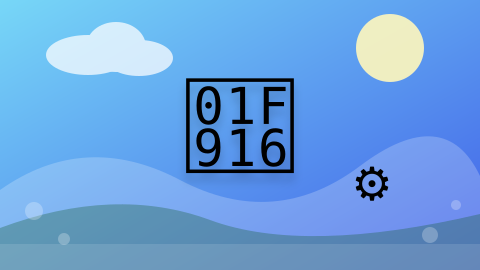
Aventura01⭐ Minha coleção de jogos0 de 21 jogados
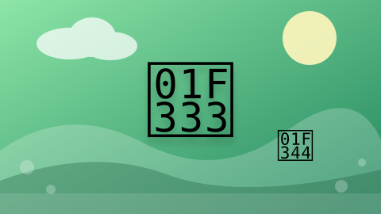
Aventura02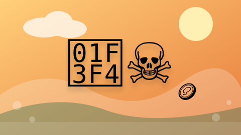
Lógica03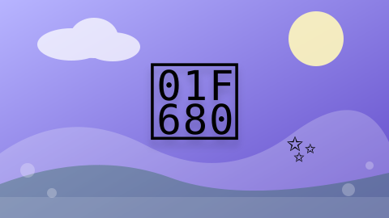
Lógica04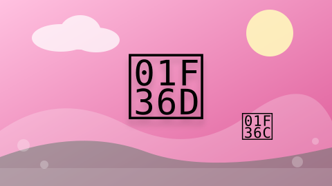
Lógica05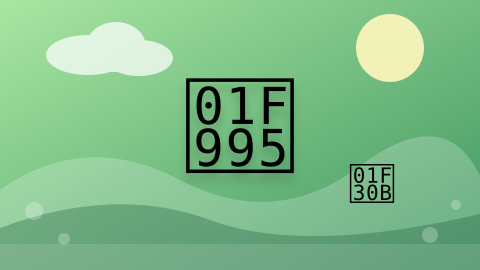
Aventura06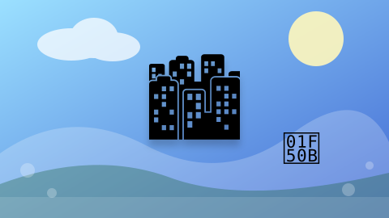
Lógica07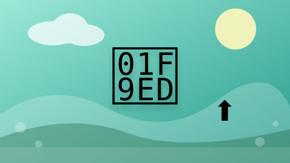
Programação08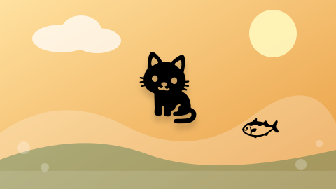
Animais09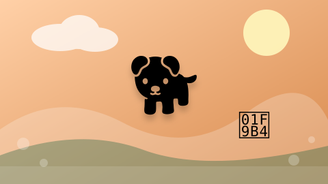
Animais10 Animais11
Animais11 Animais12
Animais12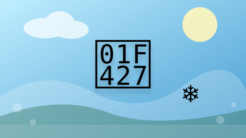
Animais13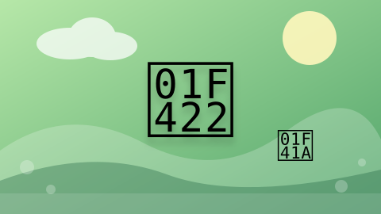
Animais14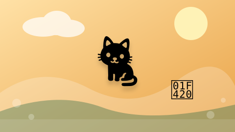
Programação15 Programação16
Programação16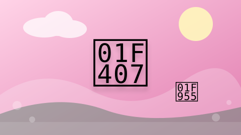
Programação17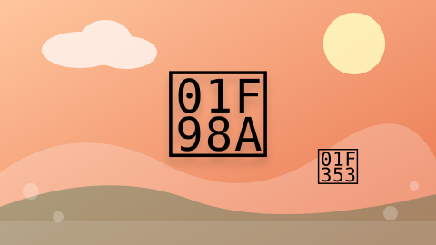
Programação18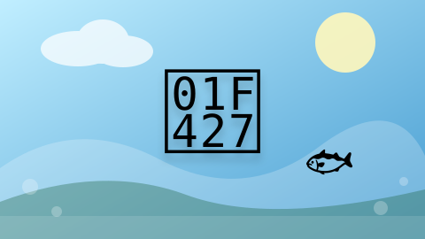
Programação19 Programação20
Programação20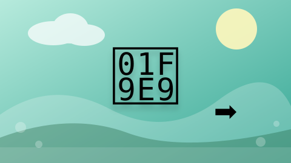
Programação21🌐 Jogos Externos
Novos desafios de programação, lógica e pensamento computacional. Os jogos abrem em outra aba.
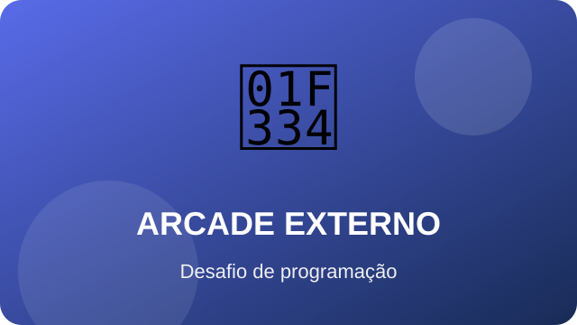
🌐 Jogo externo
Jogos de Informática — Coquinhos
Coleção de jogos educativos de informática e raciocínio.
▶ Abrir jogo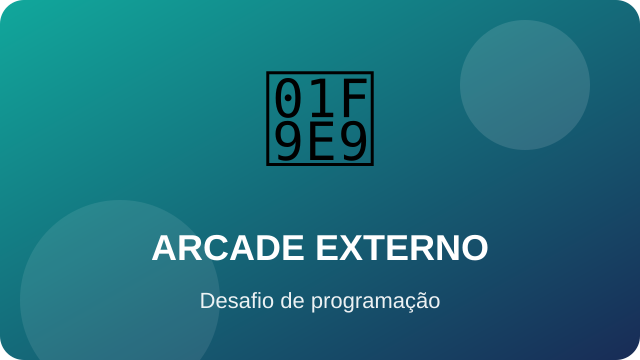
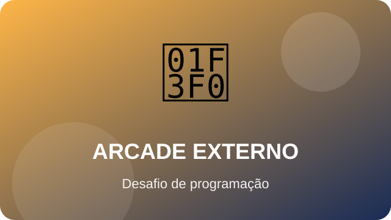
🌐 Jogo externo
Wayfinding with Code — Disney
Desafios de orientação e programação em um universo Disney.
▶ Abrir jogo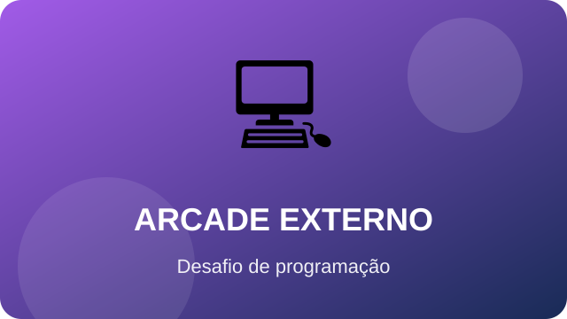
🌐 Jogo externo
Hour of Code — Aprender
Atividades introdutórias para aprender programação.
▶ Abrir jogo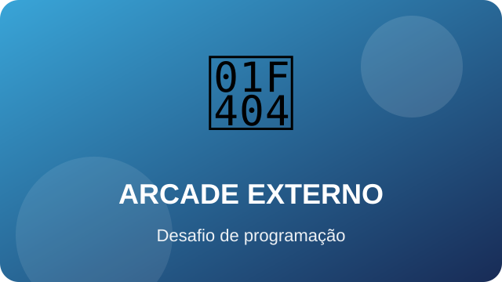
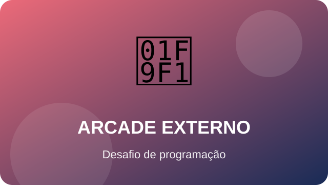
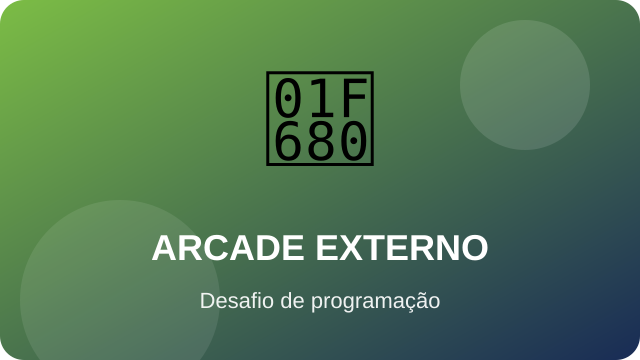
🌐 Jogo externo
Code.org — Hora do Código
Experimente atividades de programação para iniciantes.
▶ Abrir jogo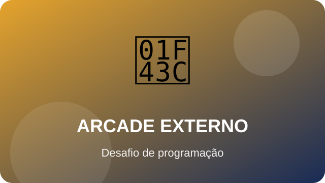
🌐 Jogo externo
Code Panda — Math Playground
Ajude o panda com comandos e sequências lógicas.
▶ Abrir jogo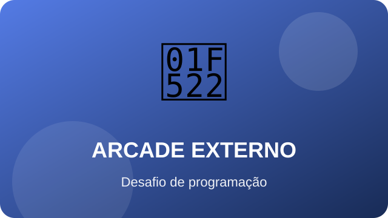
🌐 Jogo externo
Compute It — Toxicode
Desafios de lógica que ajudam a compreender instruções e algoritmos.
▶ Abrir jogo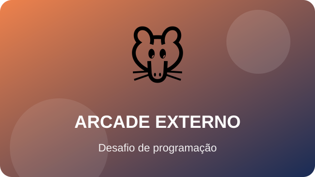
🌐 Jogo externo
Trap the Mouse — Math Playground
Planeje movimentos para prender o ratinho no tabuleiro.
▶ Abrir jogo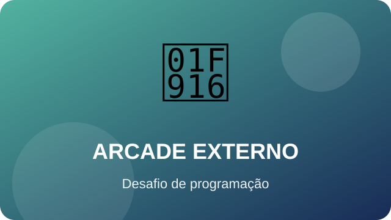
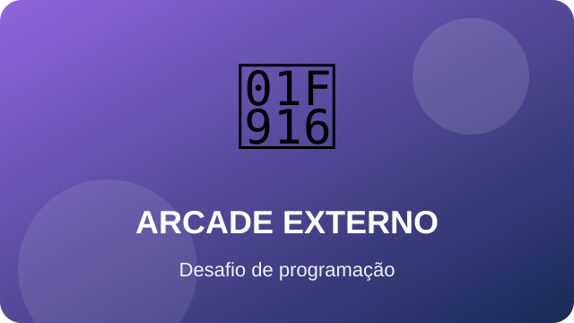
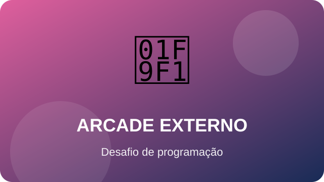
🌐 Jogo externo
Wordwall — LEGO EV3
Atividades interativas criadas pela comunidade sobre LEGO EV3.
▶ Abrir jogo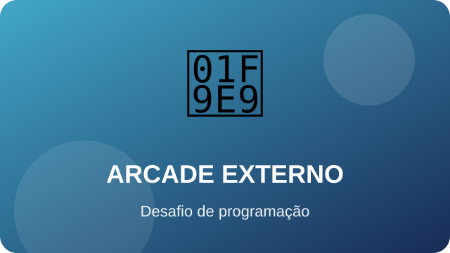
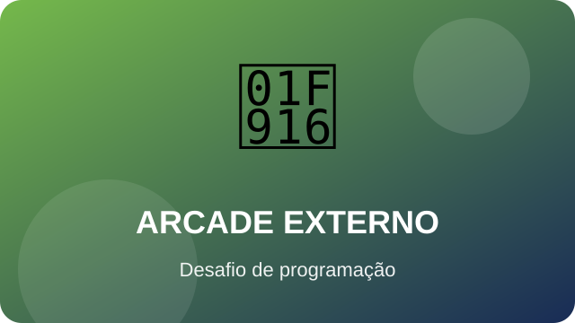
🌐 Jogo externo
Aprender a Programar um Robô — Coquinhos
Use comandos para orientar um robô e resolver desafios.
▶ Abrir jogo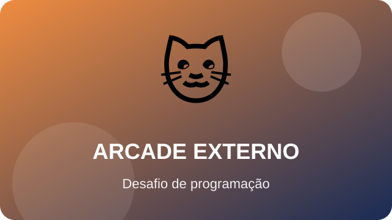
Dica: marque “Já joguei” para lembrar suas aventuras. O progresso fica salvo neste computador e navegador.